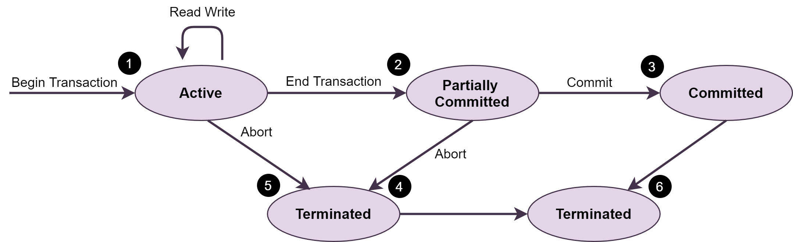

TRANSACTION
TRANSAKSI DATABASE
Dalam DBMS (Database Management System) terdapat istilah transaction. Transaction dalam DBMS bertujuan untuk menggabungkan beberapa statement perubahan ke dalam database menjadi satu kesatuan. Dilakukan semuanya atau tidak sama sekali (all or nothing) sehingga tidak terjadi ketidakkonsistenan data. Biasanya, transaksi dimulai oleh program pengguna yang ditulis dalam bahasa manipulasi data tingkat tinggi (biasanya SQL), atau bahasa pemrograman (misalnya, C++ atau Java), dengan akses database yang disematkan di JDBC atau ODBC. Transaksi dibatasi oleh pernyataan (atau pemanggilan fungsi) dari formulir memulai transaksi dan mengakhiri transaksi. Transaksi terdiri dari semua operasi yang dijalankan antara transaksi awal dan transaksi akhir.
FUNGSI UTAMA TRANSAKSI
Transaksi memiliki 2 fungsi utama, yaitu:
- Menyediakan Reliabilitas Artinya yaitu jika terjadi kesalahan pada salah satu statement maka seluruh perubahan akan digagalkan. Sehingga data yang tersimpan benar-benar reliable (dapat diandalkan).
- Melakukan Isolasi Artinya yaitu satu transaksi harus di proses satu persatu. Sehingga tidak ada kemungkinan 2 program mengakses atau bahkan mengubah data sekaligus.
JENIS OPERASI PADA TRANSAKSI
Dalam penggunaannya, Transaksi membutuhkan 2 operasi, yaitu:
- read(X) Artinya operasi ini akan mentransfer data item X dari database ke local buffer yang dimiliki oleh transaksi yang mengeksekusi operasi pembacaan (read).
- write(X) Artinya operasi ini akan mentransferkan data item X dari local buffer dari aksi transaksi yang mengeksekusi perintah penuilisan kembali ke database (write).
STATUS TRANSAKSI
State merupakan bagian dari transaksi. Transaksi akan benar-benar dikatakan sukses (successfully completion) apabila transaksi berada pada salah satu dari state berikut:

(Diagram Transisi Status untuk Transaksi Database)
- Active State Dalam status ini, Sebuah transaksi masuk ke dalam keadaan aktif saat proses eksekusi dimulai. Selama status ini, operasi baca atau tulis dapat dilakukan.
- Partially Committed Ketika sebuah transaksi menjalankan operasi akhirnya, ia dikatakan berada dalam status partially committed.
- Committed State Ketika transaksi berkomitmen untuk menyatakan, itu telah menyelesaikan eksekusinya dengan sukses. Selain itu, semua perubahannya dicatat ke database secara permanen.
- Failed State Sebuah transaksi dianggap gagal ketika salah satu pemeriksaan gagal atau jika transaksi dibatalkan saat dalam keadaan aktif.
- Terminated State Status transaksi mencapai status dihentikan ketika transaksi tertentu yang keluar dari sistem tidak dapat dimulai ulang.
ACID PROPERTIES
Apa itu ACID?
ACID adalah singkatan dari Atomicity, Consistency, Isolation, dan Durability. Properti ACID digunakan untuk menjaga integritas database selama pemrosesan transaksi untuk memastikan akurasi, kelengkapan, dan integritas data. Untuk lebih mengetahui apa itu ACID yaitu sebagai berikut:
- Atomicity Properti ini menyatakan bahwa transaksi harus diperlakukan sebagai unit atom, yaitu, semua operasinya dijalankan atau tidak sama sekali. Tidak boleh ada status dalam database di mana transaksi dibiarkan selesai sebagian. States harus didefinisikan baik sebelum eksekusi transaksi atau setelah eksekusi/kegagalan transaksi.
- Consistency Database harus tetap dalam keadaan konsisten setelah transaksi apa pun. Tidak ada transaksi yang berdampak buruk pada data yang berada di database. Jika database berada dalam keadaan yang konsisten sebelum eksekusi transaksi, ia juga harus tetap konsisten setelah eksekusi transaksi.
- Isolation Dalam sistem database di mana lebih dari satu transaksi dijalankan secara bersamaan dan paralel, properti isolasi menyatakan bahwa semua transaksi akan dilakukan dan dijalankan seolah-olah itu adalah satu-satunya transaksi dalam sistem. Tidak ada transaksi yang akan mempengaruhi keberadaan transaksi lainnya.
- Durability Database harus cukup tahan lama untuk menyimpan semua pembaruan terkini bahkan jika sistem gagal atau dimulai ulang. Jika suatu transaksi memperbarui sebagian data dalam database dan melakukan, maka database akan menyimpan data yang dimodifikasi. Jika transaksi dilakukan tetapi sistem gagal sebelum data dapat ditulis ke disk, maka data tersebut akan diperbarui setelah sistem kembali berfungsi.
CONTOH KASUS ACID
Di bawah ini merupakan contoh kasus dari operasi yang harus dieksekusi dengan transaksi yang membutuhkan requirement ACID. sAdapun kasus yang diangkat yaitu "Transaksi Antar Bank". Misalnya si A ingin mentransfer uangnya dari rekening pribadinya sebesar Rp.100.000 (X) ke rekening tempat ia membeli barang B (Y).
- Baca saldo akun si A
- Kurangi jumlah dari saldo si A
- Tulis sisa saldo ke akun si A
- Baca saldo akun B
- Tambahkan jumlah tersebut ke saldo B
- Tulis saldo baru yang diperbarui ke akun B
- read(x)
- x := x – 100000
- write(x)
- read(y)
- y := y + 100000
- write(y)
- Atomicity Requirements Jika transaksi gagal diantara tahap ke-3 dan tahap ke-6, maka sistem harus memastikan bahwa perubahan yang terjadi tidak disimpan ke database, atau akan terjadi inkonsistensi data. Dengan kata lain, selesaikan transaksi atau tidak sama sekali.
- Consistency Requirements Jumlah dari rekening x + y harus tetap, tidak berubah dengan dijalankannya proses transaksi tersebut.
- Isolation Requirements Pada saat eksekusi transaksi selesai dilaksanakan, dan user yang melakukan transaksi sudah diberitahu bahwa transfer yang dilakukannya sukses, maka harus dipastikan bahwa tidak ada kesalahan sistem yang akan terjadi yang menyebabkan hilangnya data yang berkaitan dengan proses transfer data tersebut.
- Durability Requirements Jika transaksi gagal diantara tahap ke-3 dan tahap ke-6, maka sistem harus memastikan bahwa perubahan yang terjadi tidak disimpan ke database, atau akan terjadi inkonsistensi data. Dengan kata lain, selesaikan transaksi atau tidak sama sekali.
LANGKAH YANG DITEMPUH PADA TRANSAKSI CONTOH KASUS
- Transaksi ini dimulai dalam keadaan state sedang active. Pada saat menyelesaikan statement terakhirnya, transaksi masuk ke kondisi partially committed.
- Setelah itu dalam keadaan state, transaksi telah selesai dieksekusi namun masih memiliki kemungkinan untuk dibatalkan (aborted) ketika ia memasuki state aborted, karena output yang sesungguhnya masih berada di tempat penyimpanan sementara/main memory, dan karenanya kesalahan pada hardware dapat mempengaruhi kesuksesan dari penyelesaian transaksi.
Jika step-step transaksi telah memasuki state aborted, di titik ini kita biasanya dihadapkan pada 2 opsi, yaitu:
- Mengulangi Transaksi: Sistem dapat mengulangi transaksi atau biasa disebut restart the transaction, tapi hanya jika transaksi dibatalkan karena adanya kerusakan hardware atau hardware tersebut bukan berasal dari logika internal dari transaksinya.
- Menghapus Transaksi: Sistem dapat menghapus transaksi atau biasa disebut kill the transaction. Hal ini biasanya terjadi karena adanya kesalahan logika internal yang dapat dibenahi hanya dengan menulis kembali program aplikasinya, atau karena inputan yang tidak baik, atau karena data yang diinginkan tidak ada di database.
- Sistem basis data kemudian menuliskan informasi yang dibutuhkan (write) ke dalam disk, bahwa perubahan yang dilakukan oleh transaksi dapat dibuat kembali pada saat sistem restart jika terjadi kegagalan pada sistem.
- Pada saat informasi terakhir dituliskan, maka transaksi masuk kondisi state committed.
- Sebuah transaksi akan memasuki kondisi state failed jika setelah sistem melakukan pemeriksaan, transaksi tidak dapat lagi diproses dengan eksekusi normal (misal karena kerusakan hardware atau kesalahan logika).
- Jika berada di dalam kondisi tersebut, maka transaksi harus di rolled back, dan kemudian selanjutnya memasuki kondisi state aborted (pembatalan transaksi).
Referensi
Beginnersbook: Transaction Management in DBMS
Geeksforgeeks: ACID Properties in DBMS
Guru99: DBMS Transaction Management: ACID Properties, Schedule
Ifhayz Blog: Database Transaction
Iteritory.com: ACID Properties in Transactions, DBMS
Tutorialspoint: DBMS - Transaction
QA Stack: Bagaimana cara kerja ACID dan transaksi basis data?